Proyectos · Nuestro trabajo en acción
Portafolio digital y casos de éxito en diseño web
Antes de construir, entendemos el negocio. Le mostramos cómo pensamos cada proyecto, no solo el resultado final.
Solicitar cotizaciónTrabajamos con
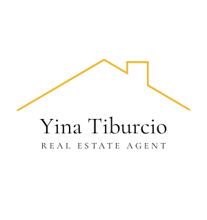
Antes de ver cada proyecto, esto es lo que va a encontrar en los cuatro:
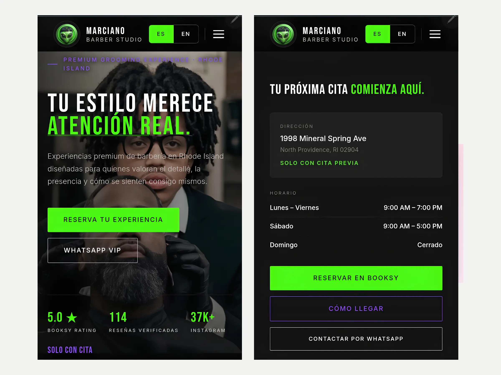
Marciano Barber Studio
marcianobarberstudio.com ↗Desarrollo de la primera presencia digital del negocio, alineando la imagen online con el posicionamiento premium y expandiendo hacia el mercado angloparlante de Rhode Island mediante una experiencia completamente bilingüe.
Inversión orientativa: Desde USD 700 (el alcance final se define en su cotización personalizada)
Estrategia de Negocios
- Desarrollo de la primera presencia digital del negocio, alineando la imagen online con el posicionamiento premium y la calidad del servicio que la barbería ya ofrecía de forma presencial.
- Creación de un ecosistema digital centralizado que complementa las Redes Sociales, Google y Booksy, manteniendo el flujo de reservas existente sin modificar la operación del negocio.
- Expansión hacia el mercado angloparlante de Rhode Island mediante una experiencia completamente bilingüe, fortaleciendo el posicionamiento local de la marca.
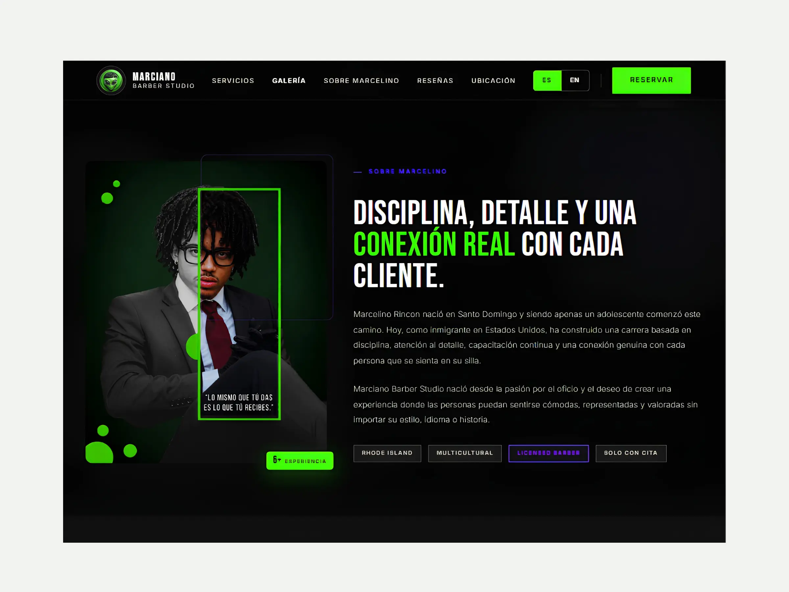
Implementación Técnica
- Desarrollo de una presencia digital bilingüe (ES/EN) con cambio de idioma integrado y navegación optimizada para dispositivos móviles.
- Implementación de una estrategia SEO combinada con GEO y AEO mediante arquitectura de información, datos estructurados y contenido orientado tanto a buscadores tradicionales como a motores de búsqueda impulsados por inteligencia artificial.
- Integración con Booksy, Google Maps, WhatsApp y Redes Sociales para unificar la experiencia del usuario sin alterar el flujo de reservas existente.
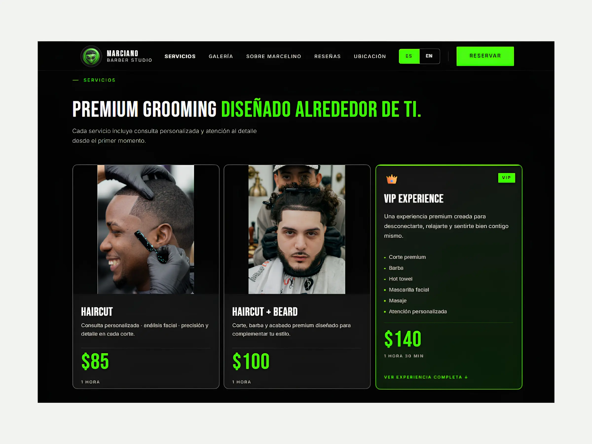
Experiencia e Identidad Visual
- Desarrollo de un Sistema de Identidad de Marca, definiendo dirección visual, paleta cromática, tipografía y lineamientos gráficos para garantizar consistencia en todos los puntos de contacto digitales.
- Dirección de arte basada en una estética oscura con acentos cálidos para reforzar el posicionamiento premium y diferenciar la marca de la imagen tradicional del sector.
- Diseño Mobile First con navegación simplificada, un único objetivo por sección y selector de idioma visible desde el primer pantallazo para facilitar la experiencia del público bilingüe.
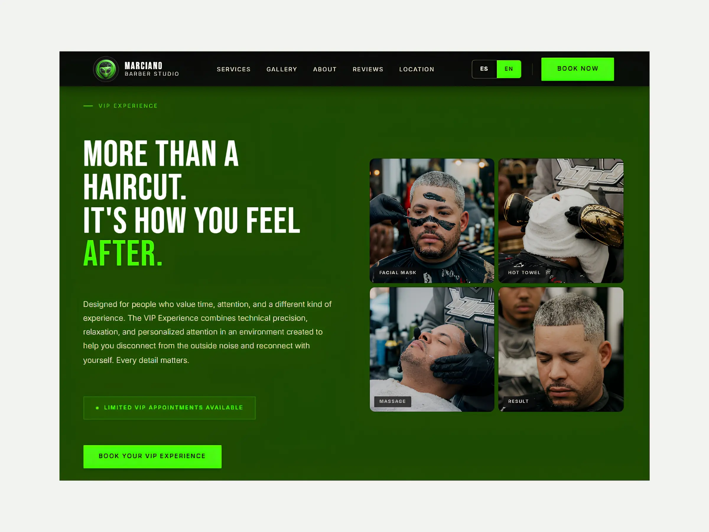
Alcance del Proyecto
- Sistema de Identidad de Marca
- Presencia Digital Bilingüe
- Arquitectura de Información
- SEO + GEO/AEO
- Mobile First & Responsive
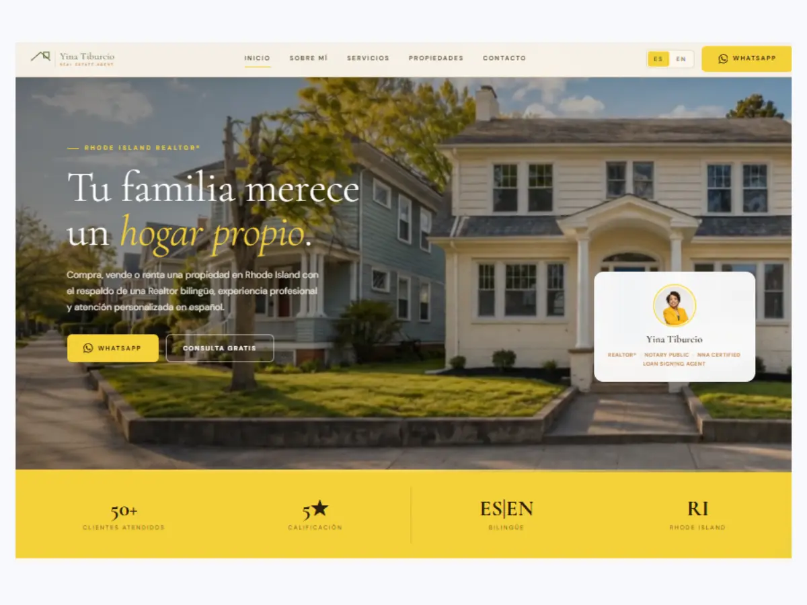
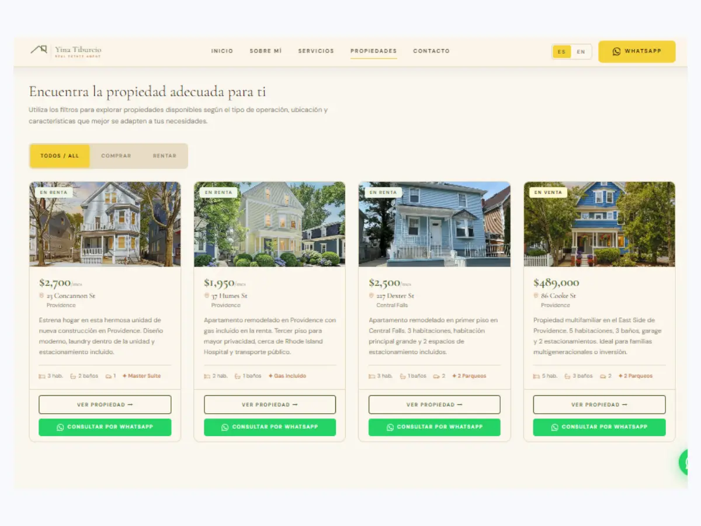
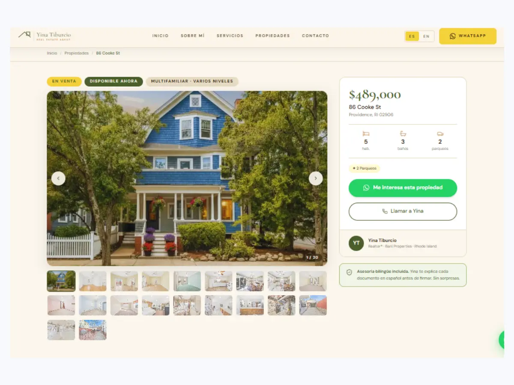
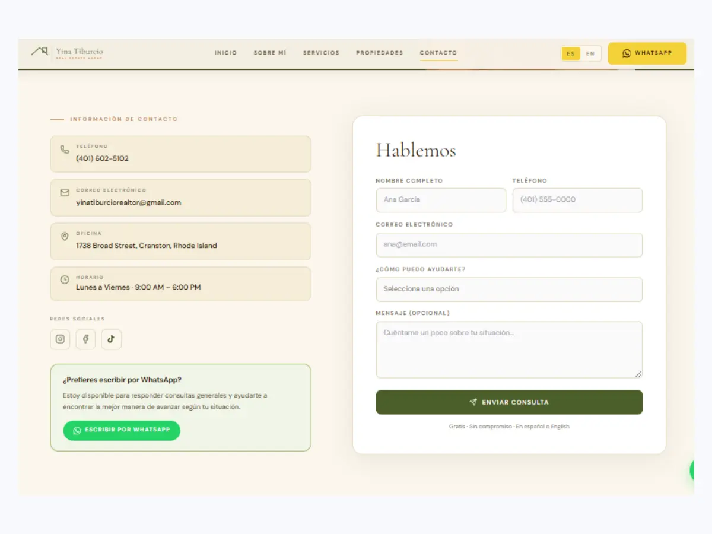
Yina Tiburcio Realtor
yinatiburciorealtor.com ↗Presencia digital que posiciona a Yina como una Realtor de confianza para la comunidad latina de Rhode Island, con un canal inmobiliario propio que centraliza la publicación de propiedades en alquiler y venta.
Inversión orientativa: Desde USD 1,200 (el alcance final se define en su cotización personalizada)
Estrategia de Negocios
- Desarrollo de una presencia digital que posiciona a Yina como una Realtor de confianza para la comunidad latina de Rhode Island, combinando atención cercana, experiencia profesional y acompañamiento bilingüe.
- Creación de un canal inmobiliario propio para centralizar la publicación de propiedades en alquiler y venta, reduciendo la dependencia de anuncios aislados en portales y Redes Sociales.
- Diseño de un recorrido que conecta la historia, las credenciales y los servicios de Yina con un sistema de propiedades orientado a inquilinos, compradores y propietarios.
Implementación Técnica
- Desarrollo de una aplicación web bilingüe con cambio de idioma persistente, navegación responsive y contenido completo en español e inglés.
- Construcción de un catálogo inmobiliario estructurado con filtros por tipo de operación, tarjetas reutilizables y un modelo centralizado de datos para organizar el inventario de propiedades.
- Implementación de fichas dinámicas para cada inmueble, con galería fotográfica, características, datos destacados, lugares cercanos, mapa de ubicación, propiedades relacionadas y consultas personalizadas por WhatsApp.
Experiencia e Identidad Visual
- Desarrollo de un Sistema de Identidad de Marca basado en tonos cálidos y naturales, diseñado para comunicar cercanía, confianza y profesionalismo dentro del mercado inmobiliario.
- Diseño de una experiencia de exploración que permite diferenciar propiedades en alquiler y venta, revisar rápidamente sus datos principales y profundizar en una ficha individual organizada.
- Aplicación de un enfoque Mobile First con filtros accesibles, tarjetas escaneables, galerías adaptativas y llamados a la acción directos durante todo el recorrido.
Alcance del Proyecto
- Sistema de Identidad de Marca
- Sitio Web Bilingüe ES/EN
- Arquitectura de Información
- Catálogo Inmobiliario para Alquiler y Venta
- Sistema de Fichas Dinámicas de Propiedades
- SEO Local + GEO/AEO
- Mobile First & Responsive
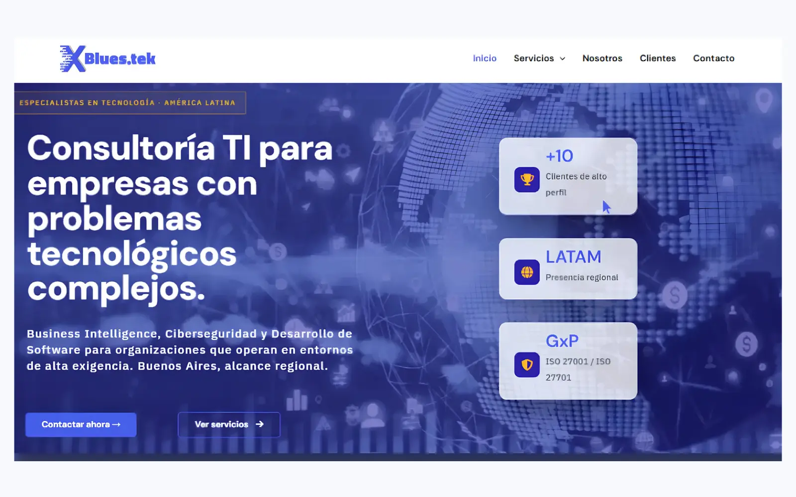
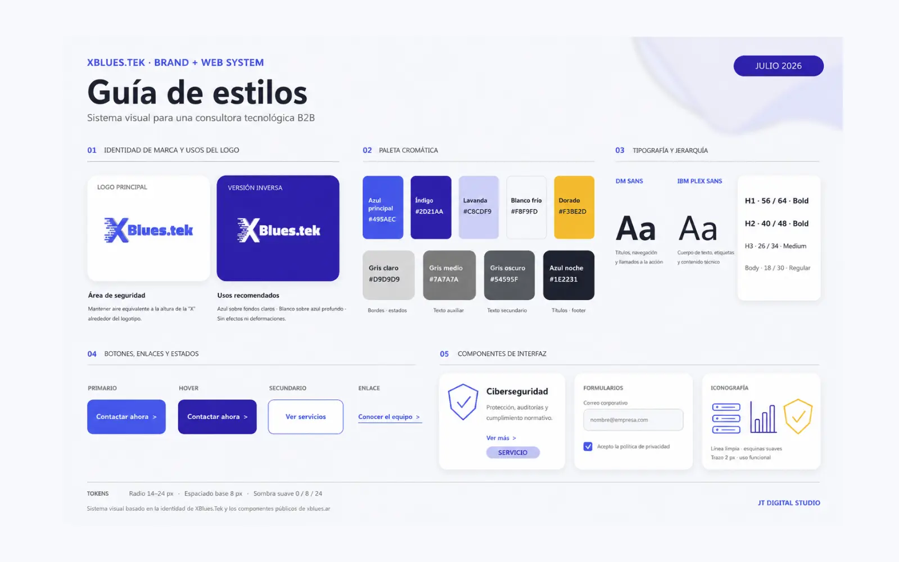
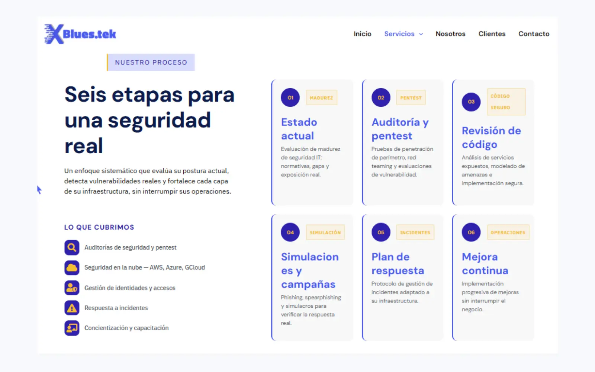
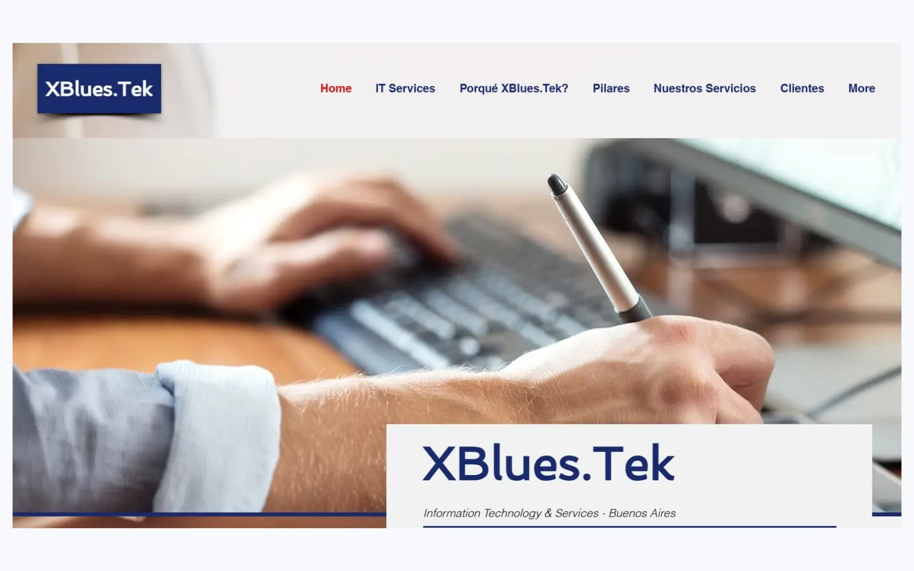
XBlues.Tek
xblues.ar ↗Reconstrucción completa de la presencia digital de una consultora tecnológica B2B, migrando desde una plataforma que limitaba su visibilidad hacia una arquitectura profesional, organizada y preparada para crecer.
Inversión orientativa: Desde USD 2,500 (el alcance final se define en su cotización personalizada)
Estrategia de Negocios
- Reconstrucción completa de la presencia digital de una consultora tecnológica B2B, migrando desde una plataforma que limitaba su visibilidad hacia una arquitectura profesional, organizada y preparada para crecer.
- Reorganización de la oferta de servicios y del contenido del sitio para responder a las necesidades de los perfiles técnicos y ejecutivos que participan en la contratación de soluciones de tecnología para empresas.
- Desarrollo de una estrategia de posicionamiento basada en investigación del cliente ideal, keywords y competidores orgánicos, orientada a mejorar la visibilidad de la consultora y facilitar la generación de consultas comerciales.
Implementación Técnica
- Migración integral desde Wix hacia WordPress con Elementor en Hostinger, incluyendo transferencia del dominio, configuración de DNS, continuidad del correo corporativo en Google Workspace y redirección de las antiguas URLs.
- Desarrollo de una arquitectura multipágina de 11 páginas, compuesta por inicio, página general de servicios, seis páginas individuales de soluciones, nosotros, clientes y contacto.
- Implementación de SEO técnico, corrección de la configuración que impedía la indexación, conexión con Google Analytics 4 y Search Console, y configuración del seguimiento de conversiones.
Experiencia e Identidad Visual
- Creación de un Sistema de Identidad de Marca completo desde cero, incluyendo rediseño del logo, paleta cromática, tipografía y criterios visuales aplicados de manera consistente en todo el sitio.
- Dirección visual corporativa y tecnológica, diseñada para reflejar la experiencia de XBlues.Tek y transmitir confianza frente a empresas que evalúan proveedores para proyectos de tecnología.
- Diseño Mobile First y Responsive con navegación simplificada, jerarquía clara de contenidos y recorridos diferenciados para facilitar la evaluación de los servicios y el contacto comercial.
Alcance del Proyecto
- Sistema de Identidad de Marca
- Migración y Reconstrucción de Plataforma
- Arquitectura de Información Multipágina
- Copywriting Estratégico B2B
- SEO Técnico y Corrección de Indexación
- Analítica y Seguimiento de Conversiones
- Mobile First & Responsive
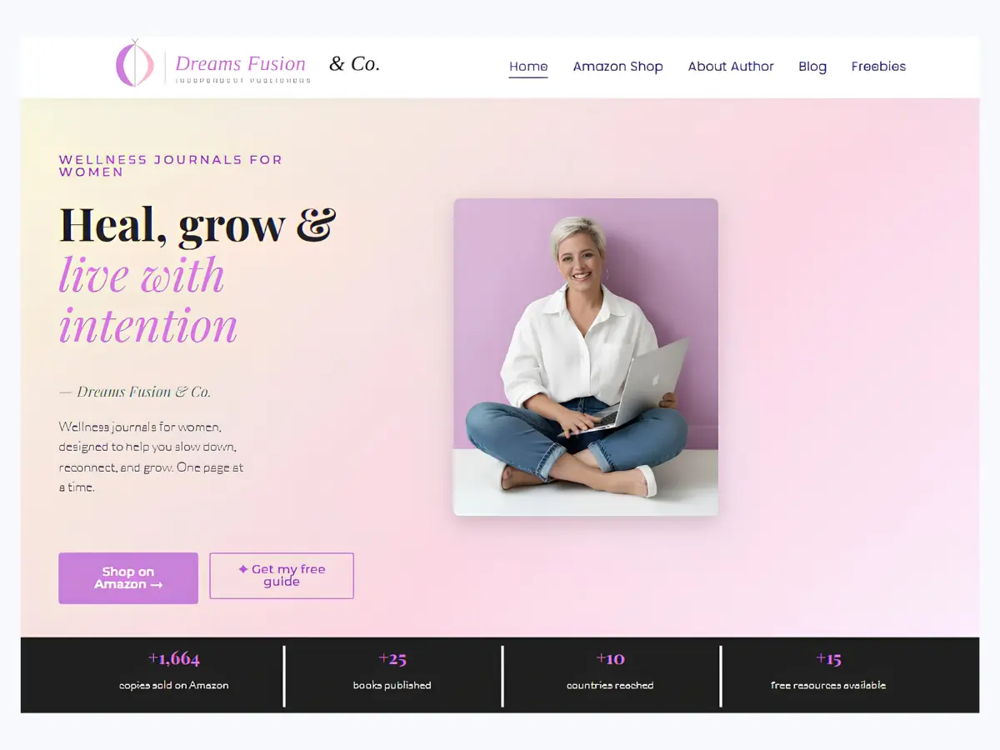
Dreams Fusion & Co.
dreamsfusionco.com ↗Reconstrucción de la presencia digital de Dreams Fusion & Co. para transformar una web limitada en una plataforma profesional que reúne el catálogo de libros, el blog y los recursos gratuitos en una experiencia centralizada.
Inversión orientativa: Desde USD 2,100 (el alcance final se define en su cotización personalizada)
Estrategia de Negocios
- Reconstrucción de la presencia digital de Dreams Fusion & Co. para transformar una web limitada en una plataforma profesional, clara y preparada para acompañar el crecimiento de la marca.
- Creación de un espacio propio que reúne el catálogo de libros, la historia de la autora, el blog y los recursos gratuitos en una experiencia centralizada.
- Desarrollo de una estrategia para atraer visitas desde Google, dirigir ventas hacia Amazon y construir una comunidad propia de suscriptores.
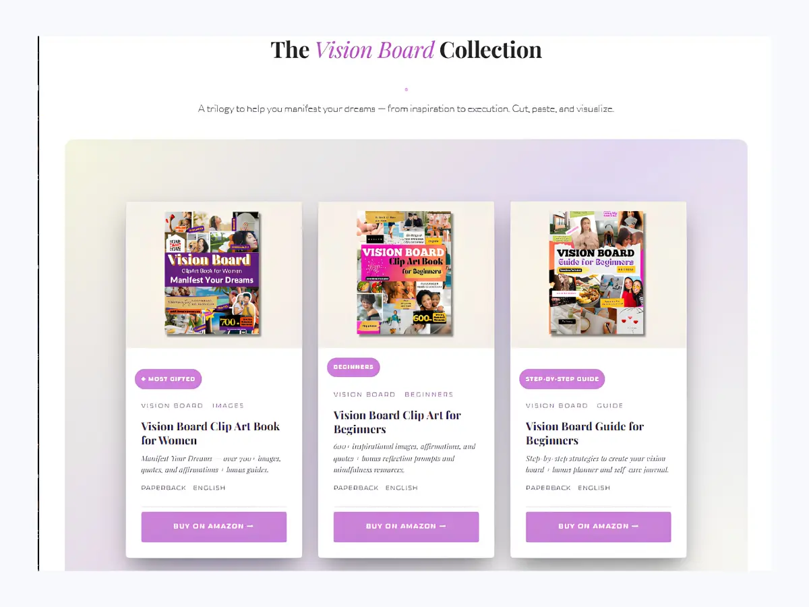
Implementación Técnica
- Desarrollo de un sitio web de varias páginas con una navegación clara y una estructura fácil de administrar y ampliar.
- Integración del catálogo de libros con Amazon, junto con un blog y un portal de recursos gratuitos con entrega automática por email.
- Configuración de herramientas para mejorar la visibilidad en Google, medir resultados, proteger el sitio y mantener una experiencia rápida y confiable.
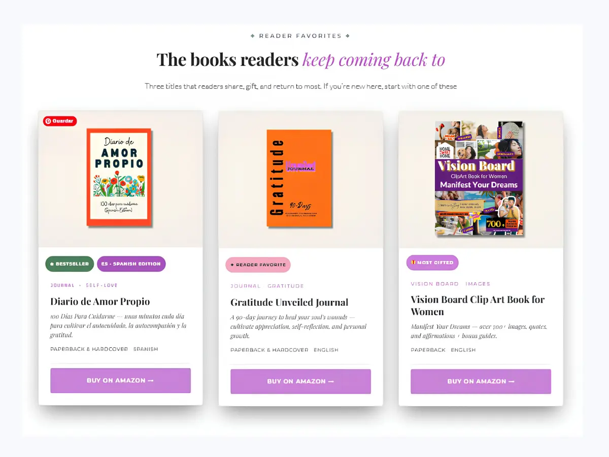
Experiencia e Identidad Visual
- Consolidación de una identidad visual suave y editorial, alineada con el bienestar emocional, el crecimiento personal y la creatividad.
- Organización del contenido para que cada visitante pueda encontrar fácilmente libros, artículos, recursos gratuitos o información sobre la autora.
- Diseño Mobile First con mensajes claros, llamados a la acción visibles y una experiencia cercana que transmite confianza desde el primer contacto.
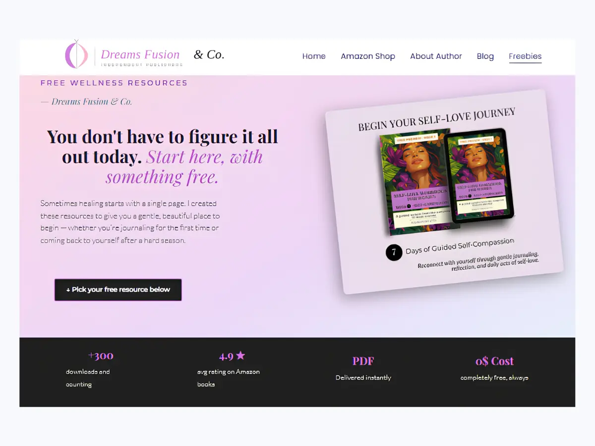
Alcance del Proyecto
- Sistema de Identidad Visual
- Reconstrucción del Sitio Web
- Arquitectura de Información
- Catálogo de Libros conectado con Amazon
- Blog y Portal de Recursos
- Captación de Suscriptores + Entrega Automática
- Posicionamiento en Google + Medición de Resultados
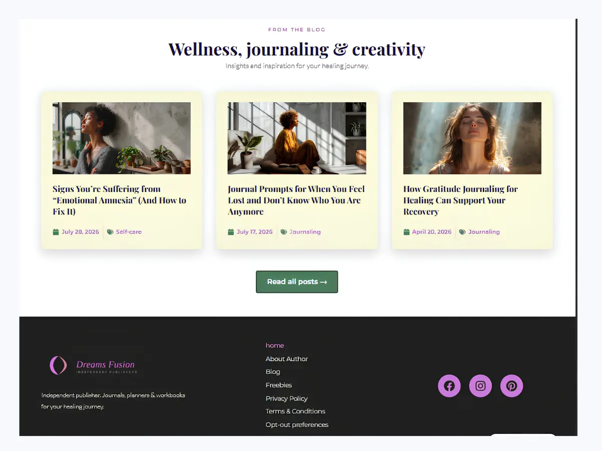
¿Necesita una presencia digital que lleve su negocio al siguiente nivel?
Estos son los negocios que ya lo lograron. Cuéntenos en qué etapa está el suyo y le mostramos cómo lo pensaríamos.
Le respondemos a la brevedad